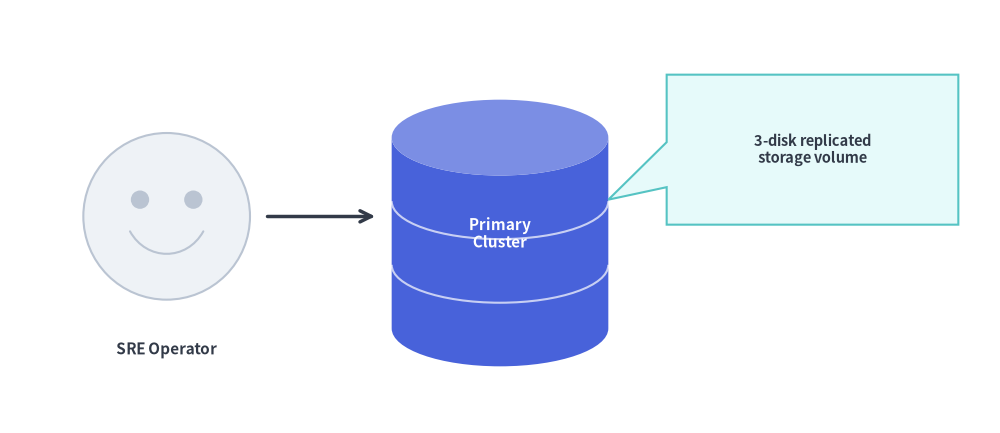
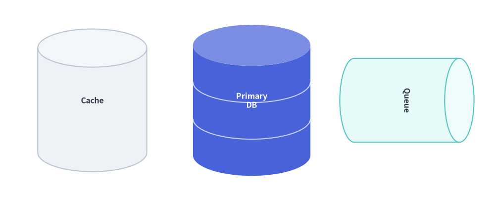
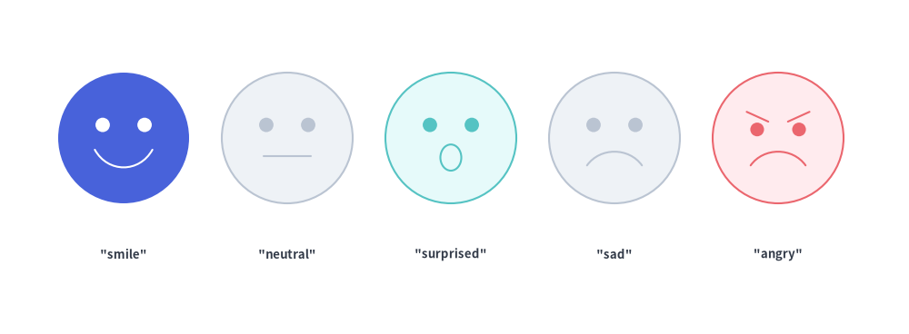
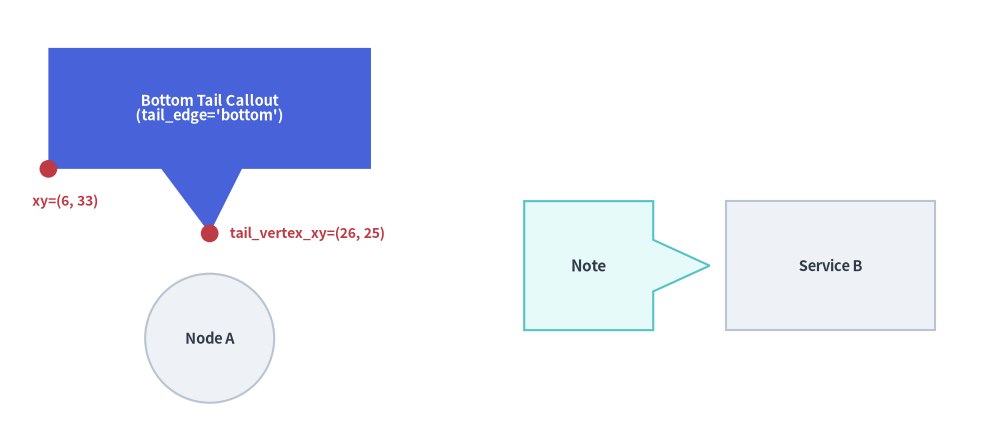

Cylinders, Faces & Callouts
Beyond standard geometric primitives, drawlib.shapes includes three expressive domain shapes for technical architecture and storytelling diagrams:

Source Code
from drawlib.canvas import save, setup
from drawlib.lines import line
from drawlib.shapes import bubblespeech, cylinder, face
from drawlib.styles import Styles
from drawlib.text import text
setup(width=120, height=52)
# 1. User Actor Face
face((20, 26), radius=10, style=Styles.Neutral, mood="smile")
text((20, 10), "SRE Operator", style=Styles.DarkBold.patch(text_size=11.0))
# 2. 3-Disk Primary Database Cylinder
cylinder(
(60, 24),
width=26,
height=32,
disks=3,
style=Styles.PrimaryFlat,
text="Primary\nCluster",
text_style=Styles.WhiteBold.patch(text_size=11.0),
)
# 3. Callout Speech Bubble pointing to the Database
bubblespeech(
xy=(80, 25),
width=35,
height=18,
tail_edge="left",
tail_start_ratio=0.25,
tail_end_ratio=0.55,
tail_vertex_xy=(73, 28),
style=Styles.SecondaryNeutral,
text="3-disk replicated\nstorage volume",
text_style=Styles.DarkBold.patch(text_size=10.5),
)
line((32, 26), (45, 26), arrow_head="->", style=Styles.DarkBold)
save()
1. Overview of Domain Shapes
cylinder: 3D shaded storage cylinders and multi-disk database stacks.face: Expressive user/actor personas and operational status faces.bubblespeech: Callout speech bubbles with directional pointer tails.
2. 3D Cylinders & Database Stacks (cylinder)
For relational databases, object storage buckets, disk arrays, and message queues, cylinder renders a 3D cylindrical container with an automatically lightened elliptical top cap:
cylinder(
xy: tuple[float, float],
width: float,
height: float,
*,
style: Style,
disks: int = 1,
text: str = "",
text_style: Style | None = None,
)
| Parameter | Type | Default | Description |
|---|---|---|---|
xy |
tuple[float, float] |
Required | Center coordinate (x, y) of the cylinder. |
width / height |
float |
Required | Total horizontal width and vertical height (> 0). |
disks |
int |
1 |
Number of stacked disk tiers (>= 1). Values 2 or 3+ add curved divider seams. |
style |
Style |
Required | Shape fill and stroke style. Set style.patch(angle=-90) for horizontal FIFO queues/pipes. |
text / text_style |
str / Style | None |
"" / None |
Centered text label and optional typography override. |
from drawlib.canvas import save, setup
from drawlib.shapes import cylinder
from drawlib.styles import Styles
setup(width=118, height=48)
# 1. Single-tier cache cylinder
cylinder((22, 24), width=26, height=34, style=Styles.Neutral, text="Cache", text_style=Styles.DarkBold.patch(text_size=11.5))
# 2. 3-disk database stack (disks=3)
cylinder(
(60, 24),
width=28,
height=36,
disks=3,
style=Styles.PrimaryFlat,
text="Primary\nDB",
text_style=Styles.WhiteBold.patch(text_size=11.5),
)
# 3. Horizontal rotated cylinder (angle=-90 for message queue)
cylinder(
(97, 24),
width=20,
height=32,
style=Styles.SecondaryNeutral.patch(angle=-90),
text="Queue",
text_style=Styles.DarkBold.patch(text_size=11.5),
)
save()

3. Expressive Actor & Status Faces (face)
For user personas, customer journey maps, and system health indicators, face renders a circular face with eyes, eyebrows, and five built-in facial expressions (mood):
face(
xy: tuple[float, float],
radius: float,
*,
style: Style,
mood: Literal["smile", "neutral", "sad", "angry", "surprised"] = "smile",
text: str = "",
text_style: Style | None = None,
)
mood: Selects the mouth and eyebrow geometry ("smile","neutral","sad","angry", or"surprised").- Automatic Feature Contrast: Eyes, eyebrows, and mouth automatically use
style.shape_line_coloron outlined cards, or high-contrasttext_color/ white on borderless flat styles (Styles.PrimaryFlat).
from drawlib.canvas import save, setup
from drawlib.shapes import face
from drawlib.styles import Styles
from drawlib.text import text
setup(width=120, height=44)
moods = [
("smile", Styles.PrimaryFlat),
("neutral", Styles.Neutral),
("surprised", Styles.SecondaryNeutral),
("sad", Styles.Neutral),
("angry", Styles.DangerNeutral),
]
for i, (mood_name, st) in enumerate(moods):
cx = 16 + i * 22
face((cx, 26), radius=9, style=st, mood=mood_name)
text((cx, 10), f'"{mood_name}"', style=Styles.DarkBold.patch(text_size=10.5))
save()

4. Callout Speech Bubbles (bubblespeech)
bubblespeech draws a rectangular callout box with an integrated triangular pointer tail that originates from any of the four edges ("left", "top", "right", "bottom") and points to an exact target coordinate tail_vertex_xy:
bubblespeech(
xy: tuple[float, float],
width: float,
height: float,
tail_edge: Literal["left", "top", "right", "bottom"],
tail_start_ratio: float,
tail_vertex_xy: tuple[float, float],
tail_end_ratio: float,
*,
style: Style,
text: str = "",
text_style: Style | None = None,
)
| Parameter | Type | Description |
|---|---|---|
xy |
tuple[float, float] |
Bottom-left corner (x, y) of the rectangular bubble body (always bottom-left anchored regardless of style.halign/valign). |
width / height |
float |
Width and height of the rectangular bubble body (> 0). |
tail_edge |
"left" | "top" | "right" | "bottom" |
Which edge of the bubble body the pointer tail attaches to. |
tail_start_ratio |
float |
Start position along tail_edge in [0.0, 1.0] (< tail_end_ratio). |
tail_end_ratio |
float |
End position along tail_edge in [0.0, 1.0] (> tail_start_ratio). |
tail_vertex_xy |
tuple[float, float] |
Absolute canvas coordinate (x, y) where the tip of the tail points. |
style / text / text_style |
Style / str / Style | None |
Bubble fill/stroke style and centered annotation text. Note: bubblespeech ignores style.shape_r, style.angle, and style.halign/valign. |
from drawlib.canvas import save, setup
from drawlib.shapes import bubblespeech, circle, rectangle
from drawlib.styles import Styles
from drawlib.text import text
setup(width=124, height=54)
# Target nodes
circle((26, 12), radius=8.0, style=Styles.Neutral, text="Node A", text_style=Styles.DarkBold.patch(text_size=10.5))
rectangle((103, 21), width=26, height=16, style=Styles.Neutral, text="Service B", text_style=Styles.DarkBold.patch(text_size=10.5))
# 1. Callout with bottom tail pointing down to Node A
bubblespeech(
xy=(6, 33),
width=40,
height=15,
tail_edge="bottom",
tail_start_ratio=0.35,
tail_end_ratio=0.60,
tail_vertex_xy=(26, 25),
style=Styles.PrimaryFlat,
text="Bottom Tail Callout\n(tail_edge='bottom')",
text_style=Styles.WhiteBold.patch(text_size=10.5),
)
# Coordinate indicators for bottom-left anchor xy and tail_vertex_xy
circle((6, 33), radius=1.1, style=Styles.DangerFlat)
text((4, 29.0), "xy=(6, 33)", style=Styles.DangerBold.patch(text_size=10.0, halign="left"))
circle((26, 25), radius=1.1, style=Styles.DangerFlat)
text((28.5, 25.0), "tail_vertex_xy=(26, 25)", style=Styles.DangerBold.patch(text_size=10.0, halign="left"))
# 2. Callout with right tail pointing to Service B
bubblespeech(
xy=(65, 13),
width=16,
height=16,
tail_edge="right",
tail_start_ratio=0.30,
tail_end_ratio=0.70,
tail_vertex_xy=(88, 21),
style=Styles.SecondaryNeutral,
text="Note",
text_style=Styles.DarkBold.patch(text_size=11.0),
)
save()

[!TIP] For embedding syntax-highlighted source code blocks alongside callouts, see SourceCode.